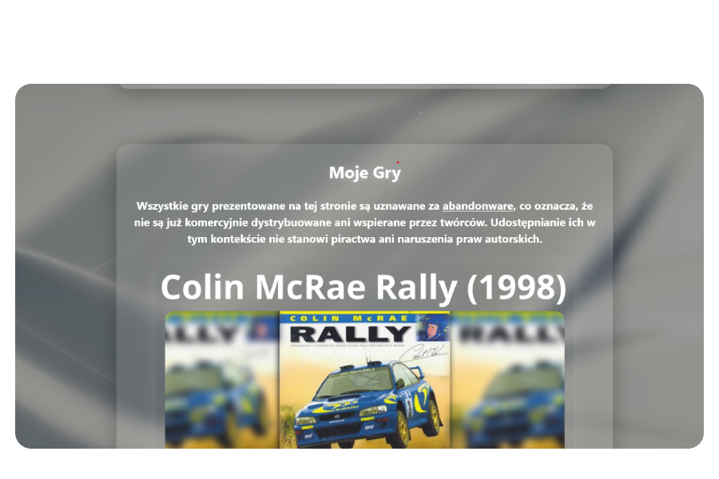
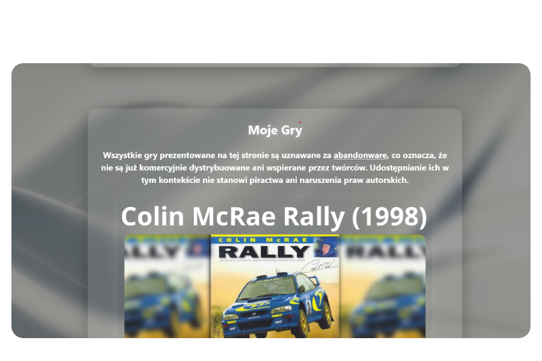

Wiadomości

Dzisiaj (4.11.2025) strona została przebudowana

Dzisiaj (19.11.2025) strona otrzymała nową stronę z darmowymi grami, dodano kilka nowych funkcji jak i naprawiono kilka błędów
Poniżej widać hyperlinki prowadzące do innych stron:
Dzisiaj (4.11.2025) strona została przebudowana

Dzisiaj (19.11.2025) strona otrzymała nową stronę z darmowymi grami, dodano kilka nowych funkcji jak i naprawiono kilka błędów